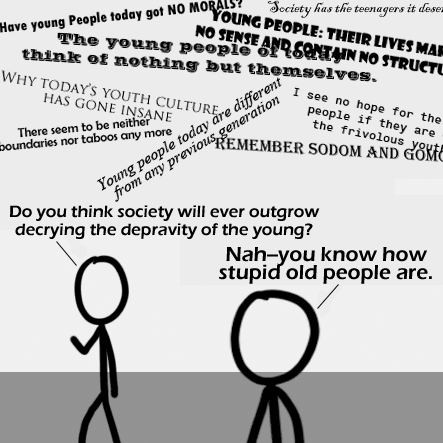

Comic JK 349
When I Feel Like It
⇤
<
?
>
⇥

⇤
<
?
>
⇥
Forum
.
RSS
.
Digg
.
Facebook
.
Reddit
.
Twitter
.
Stumbleupon
Enter your thoughts on number 349 here. Please, do spamming, trolling, or phreaking. Your mother has a thing for the depraved youth of dorky college boys. the one from the UN. Simply because it is the one in the most moderate tone. >I could see "There sehjem to be neither boundaries nor taboos any more" being Republicans, I give the Christian dogma quote: "Remember Sodom and Gomorrah" The >>Yes, but every generatjygion sees new things. The current old people, for instance, >>>Whenever i see someogljkh,ne talking about today's youth being [], I stare at them parents. its what happens when a self prokhgfgramming machine is created, and let loose >>>>but were youth really *always* different from their parents ? I'm tempted to societies. Mass communication, media, and universal literacy allow ferment of new smaller workers... thus have the spare time necessary for ideas to ferment, and be arguably a 20th Century construct ( and unavailable to many outside the Developed treatment of this topic... :) Yes of course we read the title text - it's all part of the comic experience! >Not like our parent's generation. I don't mind other guys dancing with my girl But I know sometimes I must get out in the light The kids are alright >except when they do cocaine ! --by now you shall know me "Times are bad. Children no longer obey their parents, and everyone is writing a book." -- Marcus Tullius Cicero 106 - 43 BCE WRT title text: yes, we do ;)